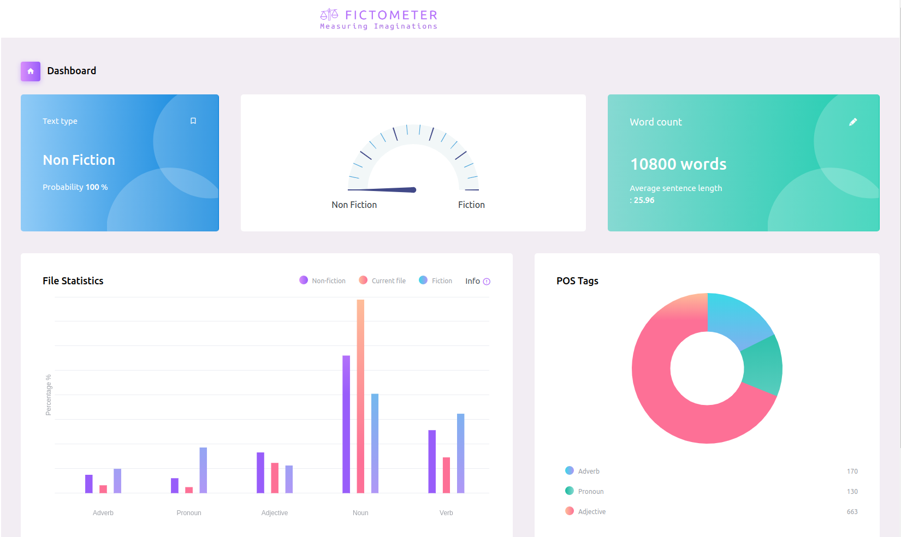

Working on the applicability of Markov Decision Processes and Game Theory in Natural Language Generation.
Game Theory & Natural Language
Recent trends have shown a promising results regarding the applicability of Game Theory and Natural Language Processing. My motivation is to understand the sentence formulation from a game theoretic perpective. I believe that the sentence formation is indeed a decision making problem and should be examined as a dynamic game.
NewsHunt
Hunting News For YouA mobile application designed to educate the user about the manipulative content used in a news article and allots a manipulative index score.
Past Projects

Fictometer
Measuring ImaginationsA tool that measures the imaginative writing styles in a given English text, using a Machine Learning algorithm.
Sentiment Analysis
Indian Institute of Science Education & Research Bhopal,July 2018 - August 2019
A novel approach to classify fictional and non fictional genres has been indentified. The reported accuracy of the classifier was around 97% and that too with only 2 features!
Game Theory & Strategic Bargaining
Indian Institute of Science Education & Research Bhopal,July 2017 - May 2018
Examined dynamic games (eg. auctions) and strategic bargaining (with infinite stages). Studied a proof of Nash Equilibrium using graph theoritic and algebraic topology approach.
Probability Theory
Indian Institute of Science Bangalore,May - July 2016
- Explored stochastic models and theory of Markov Chains.
- Studied Markov Decision Process & the convergence theorem for irreducible, aperiodic chains.